# Core Bioconductor infrastructure
if (!requireNamespace("BiocManager", quietly = TRUE)) {
install.packages("BiocManager")
}Comparing scRNA-seq Protocols with Bioconductor simpleSingleCell wokflow
Paul et al. Mouse HSC (MARS-seq), Bach et al. Mouse mammary (10x Genomics), Messmer et al. Human ESC (Smart-seq2)
Overview
Sequencing data from single-cell RNA-seq experiments must be converted into a matrix of expression values. This is usually a count matrix containing the number of reads mapped to each gene (row) in each cell (column). Alternatively, the counts may be that of the number of unique molecular identifiers (UMIs); these are interpreted in the same manner as read counts but are less affected by PCR artifacts during library preparation (Islam et al. 2014).
Constructing a count matrix from raw scRNA-seq data encompasses a variety of different experimental protocols.
Generally followed Protocols in Present day scRNA-seq experiments can be broadly categorized as follows:
- Droplet-based protocols : 10X Genomics, inDrop and Drop-seq;
- .Plate-based protocols with UMIs : CEL-seq2 and MARS-seq
- Plate-based protocols with reads : Smart-seq2 and others like sciRNA-seq
Each approach requires a different processing pipeline to deal with cell Demultiplexing and UMI Deduplication (if applicable).
This document is an effort to combine these 3 protocols in one place for easy analysis while pointing out differences in each individual protocols . For this analysis we selected three different pipelines namely 10x Genomics, MARS-seq and Smart-seq2 representing one from each protocol.
This document will briefly describe different methods used to generate a count matrix and read it into R, different approaches followed for single-cell RNA‑seq analyses while each using a different protocol, dataset and biological system.
- Paul et al. Mouse Hematopoietic Stem and Progenitor cells (HSCs) measured with MARS‑seq.
- Bach et al. Mouse mammary Epithelial and Stromal cells profiled with 10x Genomics.
- Messmer et al. Human embryonic stem cells (hESCs) profiled with Smart‑seq2, including differentiation states.
All three analyses follow the same core steps:
1. Data loading and basic inspection
2. Per-cell quality control (QC)
3. Normalization
4. Variance Modelling and highly variable gene (HVG) selection
5.Dimensionality reduction (PCA, UMAP)
6. Graph-based clustering
7. Marker detection and biological interpretation
Each section is self‑contained but uses the same core Bioconductor tools so you can compare workflows across protocols.
#|echo: false
# Installing the simpleSingleCell and other required packages like Datasets and annotation for mouse/human for our analysis.
##Uncomment this code if running for this packages for the first time inside R-console
#BiocManager::install(c(
# "SingleCellExperiment","simpleSingleCell","scuttle", "scater", "scran", "BiocSingular", "batchelor", "bluster",
# "scRNAseq", # Paul & Muraro style datasets
# "mousebrainData", # for Bach-type data if needed
# "celldex", # reference markers
# "EnsDb.Hsapiens.v86",
# "EnsDb.Mmusculus.v79"), ask = FALSE, update = FALSE)# Loading required packages
suppressPackageStartupMessages({
library(SingleCellExperiment)
library(scRNAseq)
library(scuttle)
library(scater)
library(scran)
library(batchelor)
library(bluster)
library(EnsDb.Hsapiens.v86)
library(EnsDb.Mmusculus.v79)
library(ggplot2)
library(dplyr)
})1. “MARS‑seq”: Paul et al. Mouse Haematopoietic stem cell (HSC)
1.1 Introduction
This performs an analysis of the mouse haematopoietic stem cell (HSC) dataset generated with MARS-seq (Paul et al. 2015)[1]. Cells were extracted from multiple mice under different experimental conditions (i.e., sorting protocols) and libraries were prepared using a series of 384-well plates.
1.2 Data loading
library(scRNAseq)
sce.paul <- PaulHSCData(ensembl=TRUE)library(AnnotationHub)
ens.mm.v97 <- AnnotationHub()[["AH73905"]]
anno <- AnnotationDbi::select(ens.mm.v97,
keys=rownames(sce.paul),
keytype="GENEID",
columns=c("SYMBOL", "SEQNAME"))
rowData(sce.paul) <- anno[match(rownames(sce.paul), anno$GENEID),]After loading and annotation, we inspect the resulting SingleCellExperiment object:
sce.paulclass: SingleCellExperiment
dim: 17483 10368
metadata(0):
assays(1): counts
rownames(17483): ENSMUSG00000007777 ENSMUSG00000107002 ...
ENSMUSG00000039068 ENSMUSG00000064363
rowData names(3): GENEID SYMBOL SEQNAME
colnames(10368): W29953 W29954 ... W76335 W76336
colData names(12): Seq_batch_ID Amp_batch_ID ... CD34_measurement
FcgR3_measurement
reducedDimNames(0):
mainExpName: NULL
altExpNames(0):1.3 Quality control
unfiltered <- sce.paulFor some reason, only one mitochondrial transcripts are available, so we will perform quality control using only the library size and number of detected features. Ideally, we would simply block on the plate of origin to account for differences in processing, but unfortunately, it seems that many plates have a large proportion (if not outright majority) of cells with poor values for both metrics. We identify such plates based on the presence of very low outlier thresholds, for some arbitrary definition of “low”; we then redefine thresholds using information from the other (presumably high-quality) plates.
library(scater)
stats <- perCellQCMetrics(sce.paul)
qc <- quickPerCellQC(stats, batch=sce.paul$Plate_ID)
# Detecting batches with unusually low threshold values.
lib.thresholds <- attr(qc$low_lib_size, "thresholds")["lower",]
nfeat.thresholds <- attr(qc$low_n_features, "thresholds")["lower",]
ignore <- union(names(lib.thresholds)[lib.thresholds < 100],
names(nfeat.thresholds)[nfeat.thresholds < 100])
# Repeating the QC using only the "high-quality" batches.
qc2 <- quickPerCellQC(stats, batch=sce.paul$Plate_ID,
subset=!sce.paul$Plate_ID %in% ignore)
sce.paul <- sce.paul[,!qc2$discard]examine the number of cells discarded for each reason.
colSums(as.matrix(qc2)) low_lib_size low_n_features discard
1695 1781 1783 We create some diagnostic plots for each metric.
colData(unfiltered) <- cbind(colData(unfiltered), stats)
unfiltered$discard <- qc2$discard
unfiltered$Plate_ID <- factor(unfiltered$Plate_ID)
gridExtra::grid.arrange(
plotColData(unfiltered, y="sum", x="Plate_ID", colour_by="discard") +
scale_y_log10() + ggtitle("Total count"),
plotColData(unfiltered, y="detected", x="Plate_ID", colour_by="discard") +
scale_y_log10() + ggtitle("Detected features"),
ncol=1
)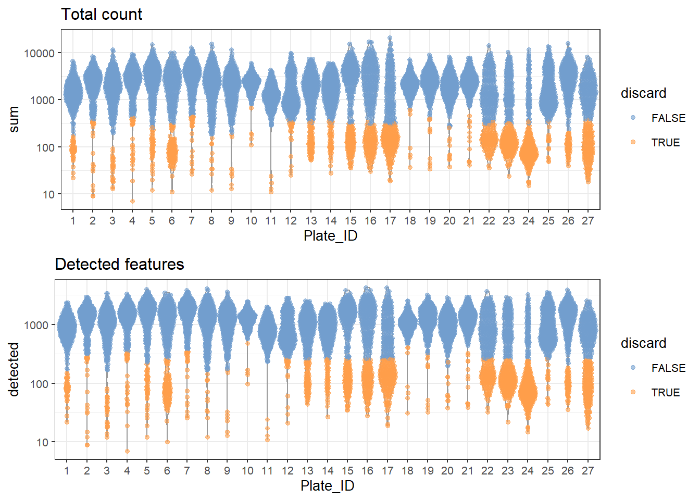
1.4 Normalization
library(scran)
set.seed(101000110)
clusters <- quickCluster(sce.paul)
sce.paul <- computeSumFactors(sce.paul, clusters=clusters)
sce.paul <- logNormCounts(sce.paul)We examine some key metrics for the distribution of size factors, and compare it to the library sizes as a sanity check.
summary(sizeFactors(sce.paul)) Min. 1st Qu. Median Mean 3rd Qu. Max.
0.05681 0.42248 0.77545 1.00000 1.33514 9.65387 plot(librarySizeFactors(sce.paul), sizeFactors(sce.paul), pch=16,
xlab="Library size factors",
ylab="Deconvolution factors",
log="xy")
1.5 Variance Modelling
We fit a mean-variance trend to the endogenous genes to detect highly variable genes. Unfortunately, the plates are confounded with an experimental treatment (Batch_desc) so we cannot block on the plate of origin.
set.seed(10010101)
dec.paul <- modelGeneVarByPoisson(sce.paul)
top.paul <- getTopHVGs(dec.paul, prop=0.1)
plot(dec.paul$mean, dec.paul$total, pch=16, cex=0.5,
xlab="Mean of log-expression",
ylab="Variance of log-expression")
curve(metadata(dec.paul)$trend(x), col="blue", add=TRUE)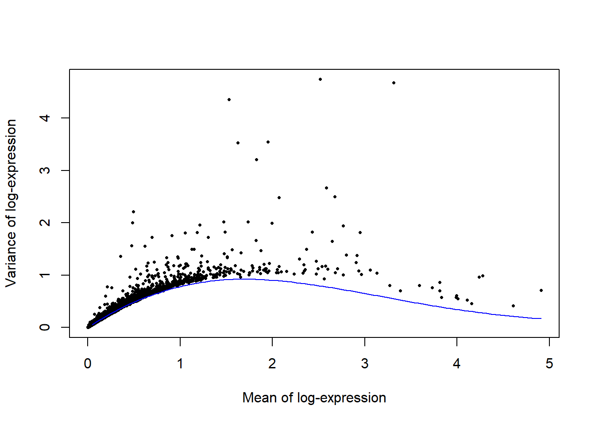
set.seed(1010101)
dec.paul <- modelGeneVarByPoisson(sce.paul)
top.paul <- getTopHVGs(dec.paul, prop=0.1)plot(dec.paul$mean, dec.paul$total, pch=16, cex=0.5,
xlab="Mean of log-expression",
ylab="Variance of log-expression")
curve(metadata(dec.paul)$trend(x), col="blue", add=TRUE)1.6 Dimensionality reduction
set.seed(101010011)
sce.paul <- denoisePCA(sce.paul, technical=dec.paul, subset.row=top.paul)
sce.paul <- runTSNE(sce.paul, dimred="PCA")We check that the number of retained PCs is sensible.
ncol(reducedDim(sce.paul, "PCA"))[1] 131.7 Clustering
snn.gr <- buildSNNGraph(sce.paul, use.dimred="PCA", type="jaccard")
colLabels(sce.paul) <- factor(igraph::cluster_louvain(snn.gr)$membership)These is a strong relationship between the cluster and the experimental treatment, which is to be expected. Of course, this may also be attributable to some batch effect; the confounded nature of the experimental design makes it difficult to make any confident statements either way.
tab <- table(colLabels(sce.paul), sce.paul$Batch_desc)
rownames(tab) <- paste("Cluster", rownames(tab))
pheatmap::pheatmap(log10(tab+10), color=viridis::viridis(100))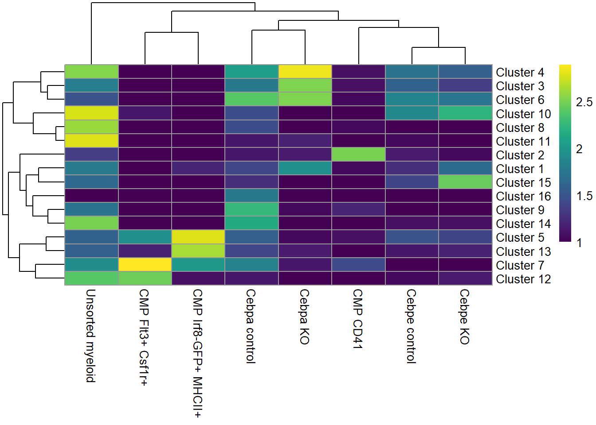
plotTSNE(sce.paul, colour_by="label")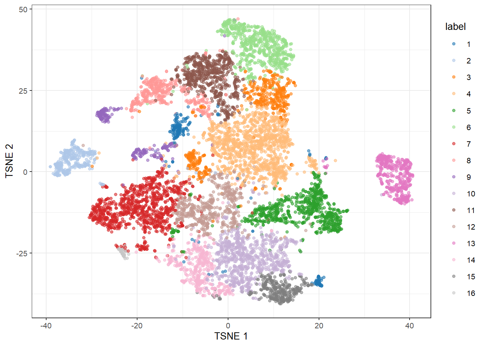
plotTSNE(sce.paul, colour_by="label", other_fields="Batch_desc") +
facet_wrap(~Batch_desc)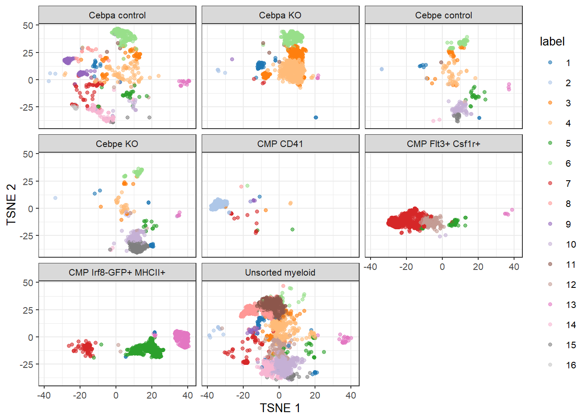
Interpretation: clusters correspond roughly to different HSC and progenitor states along the myeloid-erythroid differentiation trajectory (from the original study), based on markers such as Gata1, Mpo, Elane, etc.
2.”10x Genomics”: Bach et al. Mouse mammary gland
2.1 Introduction
This performs an analysis of the Bach et al. (2017)[2] 10X Genomics dataset, from which we will consider a single sample of epithelial cells from the mouse mammary gland during gestation.
2.2 Data loading
library(scRNAseq)
sce.mam <- BachMammaryData(samples="G_1")library(scater)
rownames(sce.mam) <- uniquifyFeatureNames(rowData(sce.mam)$Ensembl, rowData(sce.mam)$Symbol)
library(AnnotationHub)
ens.mm.v97 <- AnnotationHub()[["AH73905"]]
rowData(sce.mam)$SEQNAME <- mapIds(ens.mm.v97, keys=rowData(sce.mam)$Ensembl,
keytype="GENEID",
column="SEQNAME")2.3 Quality control
unfiltered <- sce.mamis.mito <- rowData(sce.mam)$SEQNAME == "MT"
stats <- perCellQCMetrics(sce.mam, subsets=list(Mito=which(is.mito)))
qc <- quickPerCellQC(stats, percent_subsets="subsets_Mito_percent")
sce.mam <- sce.mam[,!qc$discard]colData(unfiltered) <- cbind(colData(unfiltered), stats)
unfiltered$discard <- qc$discard
gridExtra::grid.arrange(
plotColData(unfiltered, y="sum", colour_by="discard") +
scale_y_log10() + ggtitle("Total count"),
plotColData(unfiltered, y="detected", colour_by="discard") +
scale_y_log10() + ggtitle("Detected features"),
plotColData(unfiltered, y="subsets_Mito_percent",
colour_by="discard") + ggtitle("Mito percent"),
ncol=2
)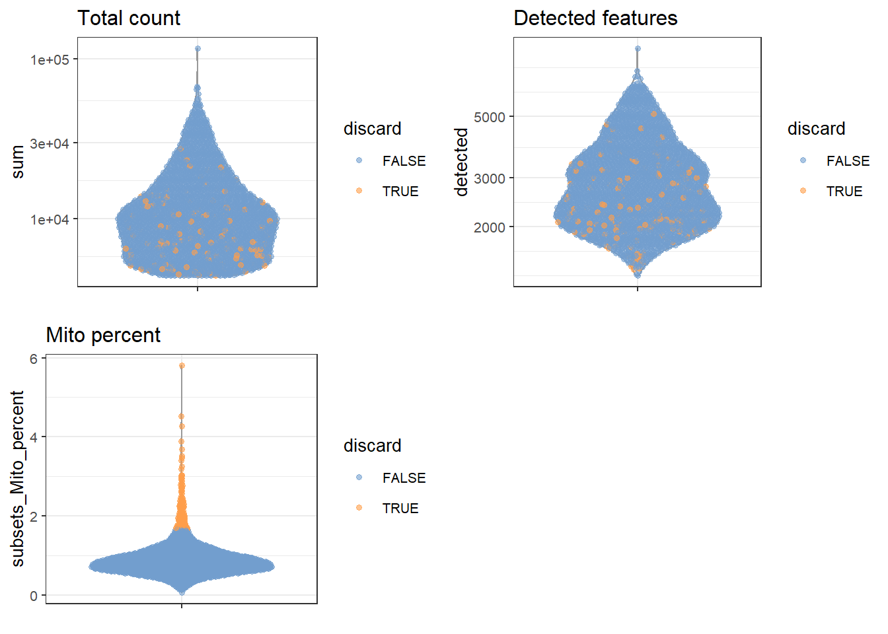
plotColData(unfiltered, x="sum",
y="subsets_Mito_percent",
colour_by="discard") +
scale_x_log10()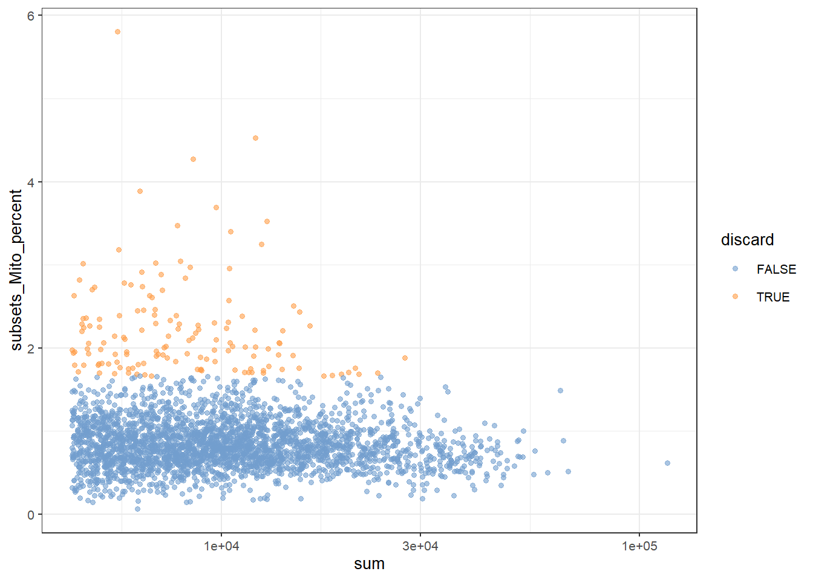
colSums(as.matrix(qc)) low_lib_size low_n_features high_subsets_Mito_percent
0 0 143
discard
143 2.4 Normalization
library(scran)
set.seed(10100110)
clusters <- quickCluster(sce.mam)
sce.mam <- computeSumFactors(sce.mam, clusters=clusters)
sce.mam <- logNormCounts(sce.mam)summary(sizeFactors(sce.mam)) Min. 1st Qu. Median Mean 3rd Qu. Max.
0.2640 0.5202 0.7524 1.0000 1.2067 10.7903 plot(librarySizeFactors(sce.mam), sizeFactors(sce.mam), pch=16,
xlab="Library size factors",
ylab="Deconvolution factors",
log="xy")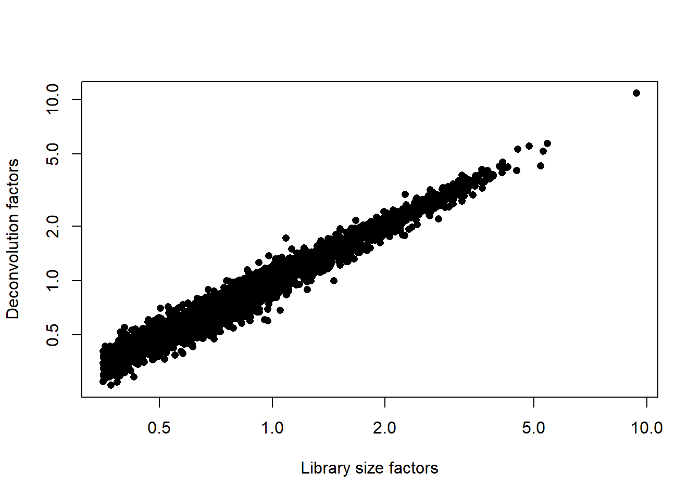
2.5 Variance modelling
We use a Poisson-based technical trend to capture more genuine biological variation in the biological component.
set.seed(1010101)
dec.mam <- modelGeneVarByPoisson(sce.mam)
top.mam <- getTopHVGs(dec.mam, prop=0.1)plot(dec.mam$mean, dec.mam$total, pch=16, cex=0.5,
xlab="Mean of log-expression",
ylab="Variance of log-expression")
curfit <- metadata(dec.mam)
curve(curfit$trend(x), col='dodgerblue', add=TRUE, lwd=2)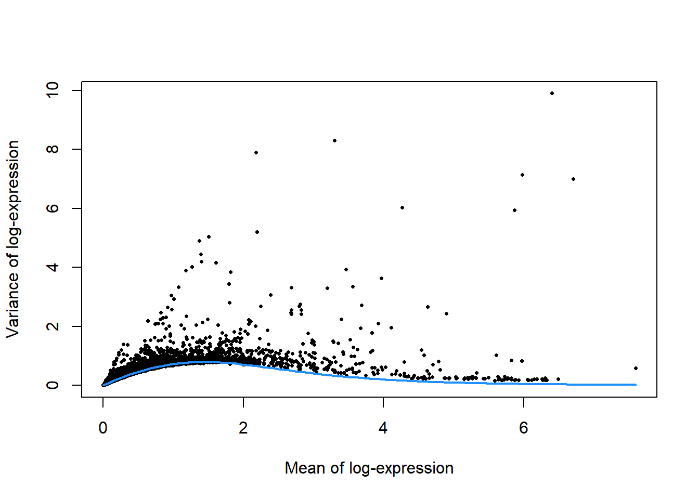
2.6 Dimensionality reduction
library(BiocSingular)
set.seed(101010011)
sce.mam <- denoisePCA(sce.mam, technical=dec.mam, subset.row=top.mam)
sce.mam <- runTSNE(sce.mam, dimred="PCA")ncol(reducedDim(sce.mam, "PCA"))[1] 152.7 Clustering
We use a higher k to obtain coarser clusters (for use in doubletCluster() later).
snn.gr <- buildSNNGraph(sce.mam, use.dimred="PCA", k=25)
colLabels(sce.mam) <- factor(igraph::cluster_walktrap(snn.gr)$membership)table(colLabels(sce.mam))
1 2 3 4 5 6 7 8 9 10
550 746 665 552 54 88 39 22 32 24 plotTSNE(sce.mam, colour_by="label")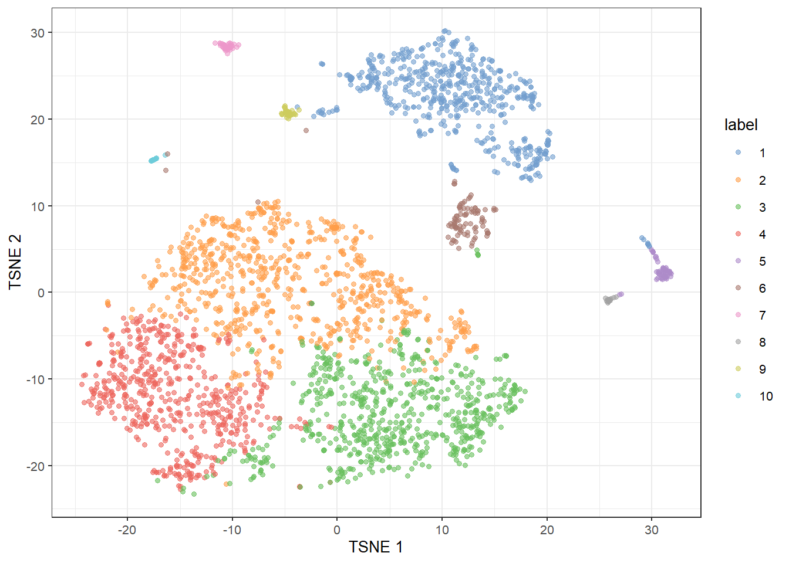
Interpretation: clusters correspond to mammary basal cells, luminal progenitors, mature luminal cells, and stromal/immune populations, based on markers such as Krt5, Krt8/18, Esr1, etc.
3. “Smart‑seq2:” Messmer et al. Human Embryonic Stem-cells (hESC)
3.1 Introduction:
Smart-seq2 is the sequencing method used for the Messmer (et al. 2019)[3] human embryonic stem cell (hESC) Messmer dataset. The analysis is performed using the Bioconductor package simple SingleCellExperiment, which is designed for handling single-cell RNA sequencing data. The workflow includes several steps such as data preprocessing, quality control, normalization, dimensionality reduction, clustering, and differential expression analysis. The goal of the analysis is to identify distinct cell populations and understand their gene expression profiles in the context of human embryonic stem cells.
3.2 Data loading:
The dataset is loaded into R using the readRDS function, which reads the serialized R object containing the single-cell data. The data is stored in a SingleCellExperiment object, which allows for efficient handling and analysis of single-cell RNA-seq data. The dataset includes information about the experiment batch and phenotype of the cells, which will be used for downstream analyses.
library(scRNAseq)
sce.mess <- MessmerESCData()
sce.mess$`experiment batch` <- factor(sce.mess$`experiment batch`)library(AnnotationHub)
ens.hs.v97 <- AnnotationHub()[["AH73881"]]
anno <- AnnotationDbi::select(ens.hs.v97, keys=rownames(sce.mess),
keytype="GENEID",
columns=c("SYMBOL"))
rowData(sce.mess) <- anno[match(rownames(sce.mess), anno$GENEID),]3.3 Quality control
Quality control is performed to filter out low-quality cells and genes. This typically involves calculating metrics such as the number of detected genes, total counts per cell, and the percentage of mitochondrial gene expression. Cells that do not meet certain thresholds for these metrics are removed from the analysis to ensure that only high-quality data is used for downstream analysis.
library(scuttle)
# Calculate QC metrics
sce.mess <- addPerCellQCMetrics(sce.mess,
subsets=list(Mito=grep("^MT-",
rowData(sce.mess)$SYMBOL)))
# Define filtering thresholds and identify low-quality cells
qc.stats <- perCellQCMetrics(sce.mess)
reasons <- perCellQCFilters(sce.mess,
sub.fields=c("subsets_Mito_percent", "altexps_ERCC_percent"))
filtered <- reasons$discard
colSums(as.matrix(filtered))[1] 269library(ggplot2)
library(scater)
gridExtra::grid.arrange(plotColData(sce.mess, x="experiment batch", y="sum",
colour_by=I(filtered), other_field="phenotype") +
facet_wrap(~phenotype) + scale_y_log10(),
plotColData(sce.mess, x="experiment batch", y="detected",
colour_by=I(filtered), other_field="phenotype") +
facet_wrap(~phenotype) + scale_y_log10(),
plotColData(sce.mess, x="experiment batch", y="subsets_Mito_percent",
colour_by=I(filtered), other_field="phenotype") +
facet_wrap(~phenotype),
plotColData(sce.mess, x="experiment batch", y="altexps_ERCC_percent",
colour_by=I(filtered), other_field="phenotype") +
facet_wrap(~phenotype),
ncol=1
)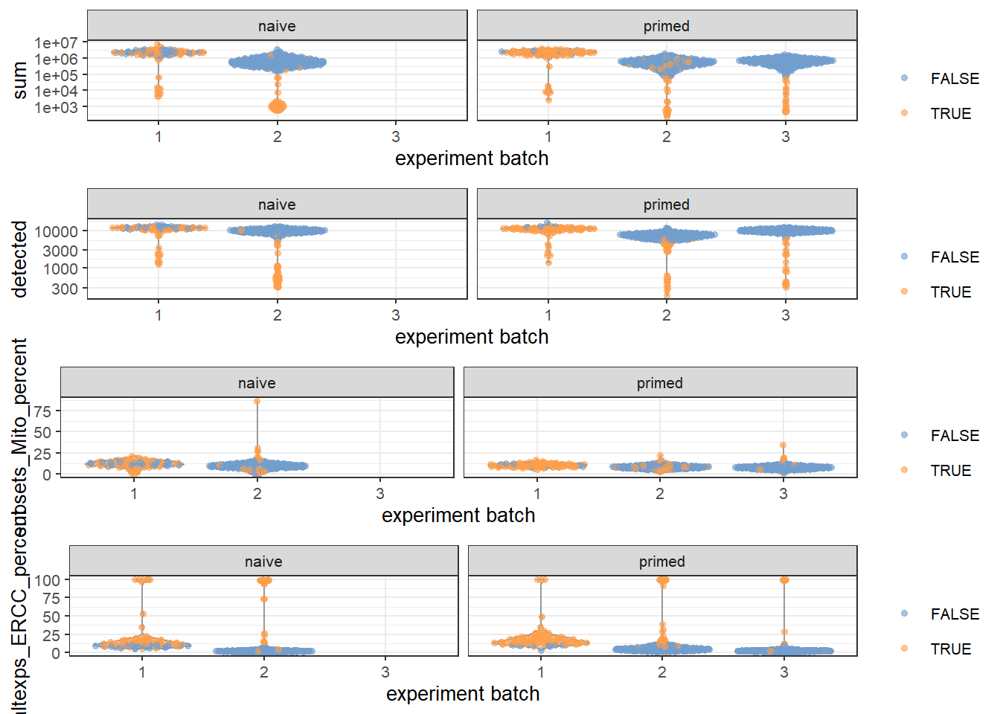
3.4 Normalization
Normalization is performed to account for differences in sequencing depth and other technical variations across cells. This step typically involves scaling the counts to a common library size and applying a transformation to stabilize the variance. Normalization allows for more accurate comparisons of gene expression levels across cells and is essential for downstream analyses such as clustering and differential expression.
library(scran)
set.seed(10000)
clusters <- quickCluster(sce.mess)
sce.mess <- computeSumFactors(sce.mess, cluster=clusters)
sce.mess <- logNormCounts(sce.mess)
par(mfrow=c(1,2))
plot(sce.mess$sum, sizeFactors(sce.mess),
log = "xy", pch=16,
xlab = "Library size (millions)",
ylab = "Size factor",
col = ifelse(sce.mess$phenotype == "naive", "black", "grey"))
spike.sf <- librarySizeFactors(altExp(sce.mess, "ERCC"))
plot(sizeFactors(sce.mess), spike.sf, log = "xy", pch=16,
ylab = "Spike-in size factor",
xlab = "Deconvolution size factor",
col = ifelse(sce.mess$phenotype == "naive", "black", "grey"))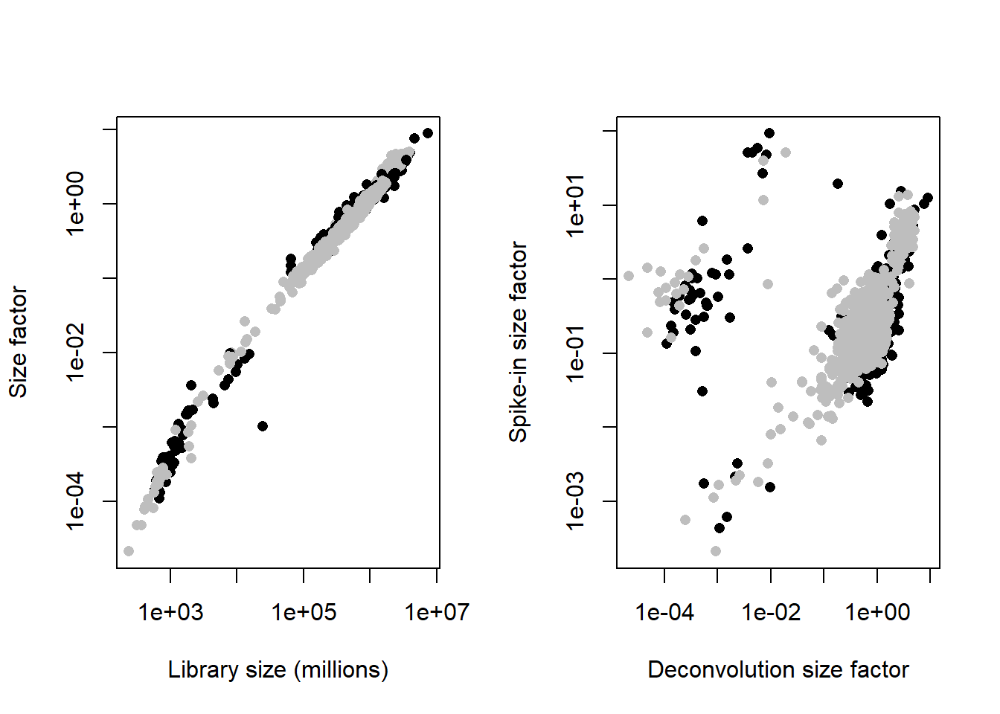
3.5 Cell cycle phase assignment
Cell cycle phase assignment is performed to classify cells into different phases of the cell cycle (G1, S, G2/M) based on the expression of known cell cycle marker genes. This can provide insights into the proliferative state of the cells and help to identify potential sources of variation in gene expression that are related to cell cycle effects.
set.seed(10001)
hs_pairs <- readRDS(system.file("exdata", "human_cycle_markers.rds", package="scran"))
assigned <- cyclone(sce.mess, pairs=hs_pairs,
gene.names=rownames(sce.mess),
BPPARAM=BiocParallel::MulticoreParam(10))
sce.mess$phase <- assigned$phases
table(sce.mess$phase)
G1 G2M S
534 446 364 smoothScatter(assigned$scores$G1, assigned$scores$G2M, xlab="G1 score",
ylab="G2/M score", pch=16)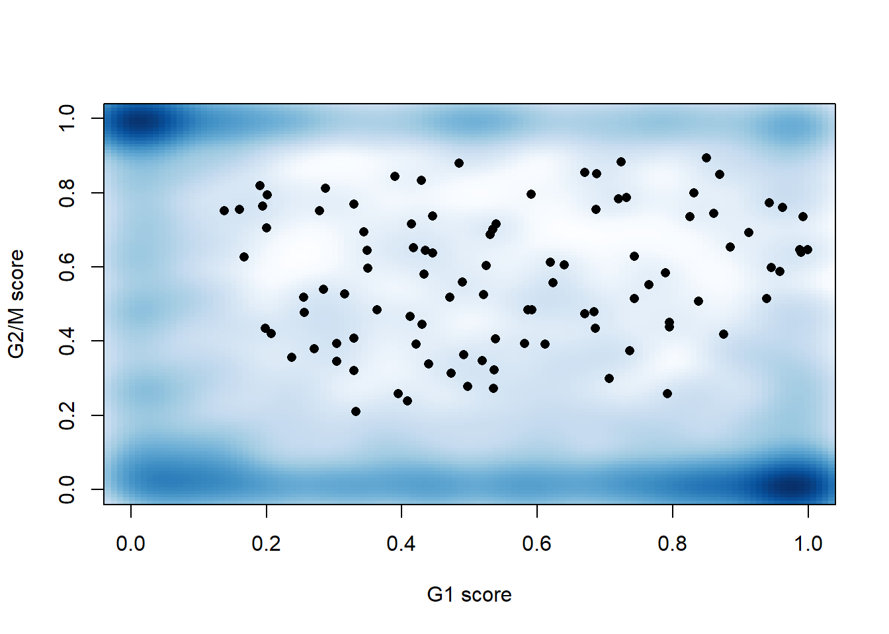
3.6 Feature selection
Feature selection is performed to identify highly variable genes that are informative for downstream analyses such as clustering and dimensionality reduction. This typically involves calculating the variance of gene expression across cells and selecting genes that exhibit higher variability than expected based on their mean expression levels. The selected genes are then used for subsequent analyses to capture the biological heterogeneity in the dataset.
dec <- modelGeneVarWithSpikes(sce.mess, "ERCC", block = sce.mess$`experiment batch`)
top.hvgs <- getTopHVGs(dec, prop = 0.1)
par(mfrow=c(1,3))
for (i in seq_along(dec$per.block))
{
current <- dec$per.block[[i]]
plot(current$mean, current$total,
xlab="Mean log-expression",
ylab="Variance", pch=16, cex=0.5, main=paste("Batch", i))
fit <- metadata(current)
points(fit$mean, fit$var, col="red", pch=16)
curve(fit$trend(x), col='dodgerblue', add=TRUE, lwd=2)
}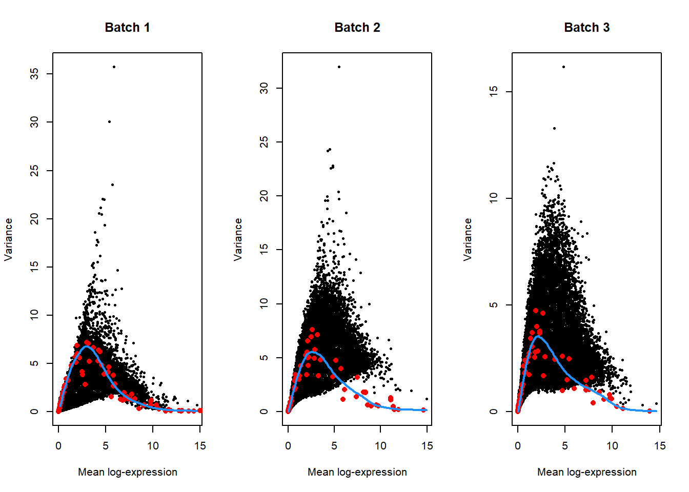
3.7 Batch correction
Batch correction is performed to remove technical variations that arise from differences in experimental conditions or processing batches. This step is crucial for integrating data from multiple batches and ensuring that the observed biological differences are not confounded by batch effects. Methods such as ComBat, MNN (Mutual Nearest Neighbors), or Harmony can be used for batch correction, which adjust the gene expression values to mitigate the influence of batch-specific biases.
library(batchelor)
sce.mess <- correctExperiments(sce.mess,
PARAM = RegressParam(
design = model.matrix(~sce.mess$phenotype +
sce.mess$`experiment batch`),
keep = 1:2 )
)3.8 Dimensionality reduction
Dimensionality reduction techniques such as Principal Component Analysis (PCA) and t-distributed Stochastic Neighbor Embedding (t-SNE) are applied to the normalized data to visualize the high-dimensional gene expression data in a lower-dimensional space. This helps to identify patterns and clusters of cells based on their gene expression profiles. PCA reduces the dimensionality by finding the directions of maximum variance in the data, while t-SNE focuses on preserving local relationships between cells.
library(matrixStats)
library(scater)
library(MatrixGenerics)
library(BiocSingular)
library(gridExtra)
library(scuttle)rowVars <- function(x, ..., useNames = TRUE) {
matrixStats::rowVars(x, ...)
}set.seed(1101001)
sce.mess <- runPCA(sce.mess,
subset_row = top.hvgs,
exprs_values = "corrected",
BSPARAM = BiocSingular::IrlbaParam())
sce.mess <- runTSNE(sce.mess, dimred = "PCA", perplexity = 40)From a naive PCA, the cell cycle appears to be a major source of biological variation within each phenotype. To mitigate this, we can regress out the cell cycle scores from the PCA.
gridExtra::grid.arrange(
plotTSNE(sce.mess, colour_by = "phenotype") + ggtitle("By phenotype"),
plotTSNE(sce.mess, colour_by = "experiment batch") + ggtitle("By batch "),
plotTSNE(sce.mess, colour_by = "CDK1", swap_rownames="SYMBOL") + ggtitle("By CDK1"),
plotTSNE(sce.mess, colour_by = "phase") + ggtitle("By phase"),
ncol = 2
)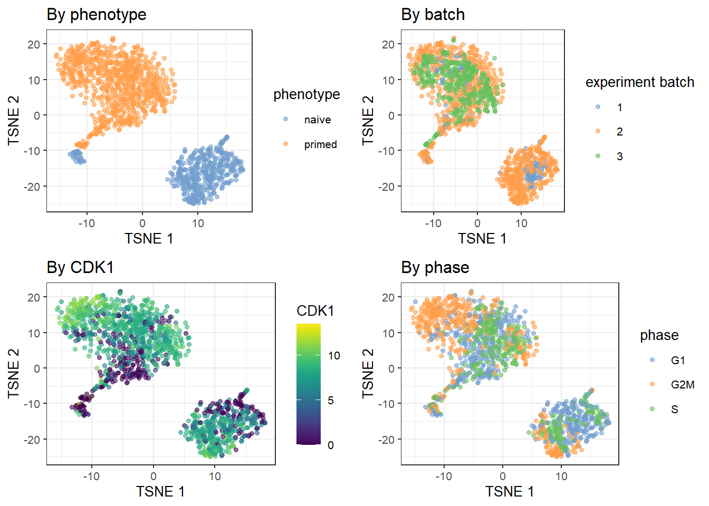
Note: In principle, Contrastive PCA cPCA and Sparse PCA scPCA could further reduce cell‑cycle effects using primed-only cells as background, as shown in the OSCA Messmer workflow, but here we only focused on standard PCA/t‑SNE on batch‑corrected HVGs.
Interpretation: clusters correspond to pluripotent ESC states and early differentiation trajectories, based on markers such as POU5F1 (OCT4), NANOG, SOX2 for pluripotency and lineage markers for differentiation.
Session Info:
sessionInfo()R version 4.6.0 (2026-04-24 ucrt)
Platform: x86_64-w64-mingw32/x64
Running under: Windows 11 x64 (build 26200)
Matrix products: default
LAPACK version 3.12.1
locale:
[1] LC_COLLATE=English_United States.utf8
[2] LC_CTYPE=English_United States.utf8
[3] LC_MONETARY=English_United States.utf8
[4] LC_NUMERIC=C
[5] LC_TIME=English_United States.utf8
time zone: America/New_York
tzcode source: internal
attached base packages:
[1] stats4 stats graphics grDevices utils datasets methods
[8] base
other attached packages:
[1] gridExtra_2.3 BiocSingular_1.28.0
[3] AnnotationHub_4.2.0 BiocFileCache_3.2.0
[5] dbplyr_2.5.2 dplyr_1.2.1
[7] EnsDb.Mmusculus.v79_2.99.0 EnsDb.Hsapiens.v86_2.99.0
[9] ensembldb_2.36.0 AnnotationFilter_1.36.0
[11] GenomicFeatures_1.64.0 AnnotationDbi_1.74.0
[13] bluster_1.22.0 batchelor_1.28.0
[15] scran_1.39.2 scater_1.40.0
[17] ggplot2_4.0.3 scuttle_1.22.0
[19] scRNAseq_2.26.0 SingleCellExperiment_1.34.0
[21] SummarizedExperiment_1.42.0 Biobase_2.72.0
[23] GenomicRanges_1.64.0 Seqinfo_1.2.0
[25] IRanges_2.46.0 S4Vectors_0.50.0
[27] BiocGenerics_0.58.0 generics_0.1.4
[29] MatrixGenerics_1.24.0 matrixStats_1.5.0
loaded via a namespace (and not attached):
[1] RColorBrewer_1.1-3 jsonlite_2.0.0
[3] magrittr_2.0.5 ggbeeswarm_0.7.3
[5] gypsum_1.8.0 farver_2.1.2
[7] rmarkdown_2.31 BiocIO_1.22.0
[9] vctrs_0.7.3 DelayedMatrixStats_1.34.0
[11] memoise_2.0.1 Rsamtools_2.28.0
[13] RCurl_1.98-1.18 htmltools_0.5.9
[15] S4Arrays_1.12.0 curl_7.1.0
[17] BiocNeighbors_2.5.2 Rhdf5lib_2.0.0
[19] SparseArray_1.12.2 rhdf5_2.56.0
[21] alabaster.base_1.12.0 KernSmooth_2.23-26
[23] alabaster.sce_1.12.0 httr2_1.2.2
[25] cachem_1.1.0 ResidualMatrix_1.22.0
[27] GenomicAlignments_1.48.0 igraph_2.3.1
[29] lifecycle_1.0.5 pkgconfig_2.0.3
[31] rsvd_1.0.5 Matrix_1.7-5
[33] R6_2.6.1 fastmap_1.2.0
[35] digest_0.6.39 dqrng_0.4.1
[37] irlba_2.3.7 ExperimentHub_3.2.0
[39] RSQLite_2.4.6 beachmat_2.28.0
[41] labeling_0.4.3 filelock_1.0.3
[43] httr_1.4.8 abind_1.4-8
[45] compiler_4.6.0 bit64_4.8.0
[47] withr_3.0.2 S7_0.2.2
[49] BiocParallel_1.46.0 viridis_0.6.5
[51] DBI_1.3.0 HDF5Array_1.40.0
[53] alabaster.ranges_1.12.0 alabaster.schemas_1.12.0
[55] rappdirs_0.3.4 DelayedArray_0.38.1
[57] rjson_0.2.23 tools_4.6.0
[59] vipor_0.4.7 beeswarm_0.4.0
[61] glue_1.8.1 h5mread_1.4.0
[63] restfulr_0.0.16 rhdf5filters_1.24.0
[65] grid_4.6.0 Rtsne_0.17
[67] cluster_2.1.8.2 gtable_0.3.6
[69] metapod_1.20.0 ScaledMatrix_1.20.0
[71] XVector_0.52.0 ggrepel_0.9.8
[73] BiocVersion_3.23.1 pillar_1.11.1
[75] limma_3.68.2 lattice_0.22-9
[77] rtracklayer_1.72.0 bit_4.6.0
[79] tidyselect_1.2.1 locfit_1.5-9.12
[81] Biostrings_2.80.0 knitr_1.51
[83] ProtGenerics_1.44.0 edgeR_4.10.0
[85] xfun_0.57 statmod_1.5.1
[87] pheatmap_1.0.13 UCSC.utils_1.8.0
[89] lazyeval_0.2.3 yaml_2.3.12
[91] evaluate_1.0.5 codetools_0.2-20
[93] cigarillo_1.2.0 tibble_3.3.1
[95] alabaster.matrix_1.12.0 BiocManager_1.30.27
[97] cli_3.6.6 Rcpp_1.1.1-1.1
[99] GenomeInfoDb_1.48.0 png_0.1-9
[101] XML_3.99-0.23 parallel_4.6.0
[103] blob_1.3.0 sparseMatrixStats_1.24.0
[105] bitops_1.0-9 alabaster.se_1.12.0
[107] viridisLite_0.4.3 scales_1.4.0
[109] purrr_1.2.2 crayon_1.5.3
[111] rlang_1.2.0 KEGGREST_1.52.0 4. Cross-dataset comparison (high level)
4.1 Protocol differences
- MARS‑seq (Paul HSC)
- Plate-based UMI protocol capturing mouse haematopoietic stem and progenitor cells.
- Moderate cell numbers per plate, UMI counts with relatively shallow coverage per cell.
- 10X Genomics (Bach mammary)
- Droplet-based 3′ UMI protocol capturing many mammary epithelial and stromal cells during gestation.
- Very large cell numbers with shallow per-cell coverage.
- Smart‑seq2 (Messmer hESC)
- Plate-based full-length read protocol applied to human embryonic stem cells in naive and primed states.
- Fewer cells but high read depth and sensitivity, enabling detection of lower expressed genes and isoforms.
4.2 QC and normalization choices
- Paul HSC (MARS‑seq)
- QC used library size and detected genes, with extra plate-aware logic to identify problematic plates before recomputing thresholds.
- Normalization based on scran’s
deconvolution size factorsandlogNormCounts.
- Bach mammary (10X)
- QC combined library size, detected features, and mitochondrial percentage with
quickPerCellQC, reflecting typical 10X QC practice. - Normalization again used
deconvolution size factors, confirming that the approach scales to large UMI datasets.
- QC combined library size, detected features, and mitochondrial percentage with
- Messmer hESC (Smart‑seq2)
- QC used mitochondrial and ERCC spike-in proportions across experiment batches and phenotypes, exploiting the high-coverage, spike‑in–rich design.
- Normalization leveraged scran’s
size factorsand compared endogenous and spike‑insize factorsto ensure consistent scaling.
4.3 HVGs, dimensionality reduction and clustering
- HVG selection
- Paul and Bach used Poisson-based variance modeling (
modelGeneVarByPoisson) to define HVGs from endogenous genes. - Messmer used spike‑in‑aware variance modeling (
modelGeneVarWithSpikes) with batch blocking, taking advantage of ERCC controls.
- Paul and Bach used Poisson-based variance modeling (
- Dimensionality reduction
- Paul and Bach used
denoisePCAandt‑SNEon HVGs to visualize major cell populations and trajectories. - Messmer used
PCAandt‑SNEon batch‑corrected data, with additional contrastivePCAandsparse cPCAto reduce cell-cycle-driven variation.
- Paul and Bach used
- Clustering and marker detection
- All three datasets used SNN graphs (
buildSNNGraph) and Walktrap/Louvain clustering fromigraph, followed byfindMarkersto identify genes distinguishing clusters. - In Paul HSC, clusters captured myeloid–erythroid differentiation; in Bach, mammary cell types; in Messmer, naive/primed hESC states and differentiation trajectories.
- All three datasets used SNN graphs (
cat("Paul HSC cells after QC:", ncol(sce.paul), "\n")Paul HSC cells after QC: 8585 cat("Bach mammary cells after QC:", ncol(sce.mam), "\n")Bach mammary cells after QC: 2772 cat("Messmer hESC cells after QC:", ncol(sce.mess), "\n")Messmer hESC cells after QC: 1344 References:
- Paul, F., Y. Arkin, A. Giladi, D. A. Jaitin, E. Kenigsberg, H. Keren-Shaul, D. Winter, et al. 2015. “Transcriptional Heterogeneity and Lineage Commitment in Myeloid Progenitors.” Cell 163 (7): 1663–77.
- Bach, K., S. Pensa, M. Grzelak, J. Hadfield, D. J. Adams, J. C. Marioni, and W. T. Khaled. 2017. “Differentiation dynamics of mammary epithelial cells revealed by single-cell RNA sequencing.” Nat Commun 8 (1): 2128.
- Messmer, T., F. von Meyenn, A. Savino, F. Santos, H. Mohammed, A. T. L. Lun, J. C. Marioni, and W. Reik. 2019. “Transcriptional heterogeneity in naive and primed human pluripotent stem cells at single-cell resolution.” Cell Rep 26 (4): 815–24.